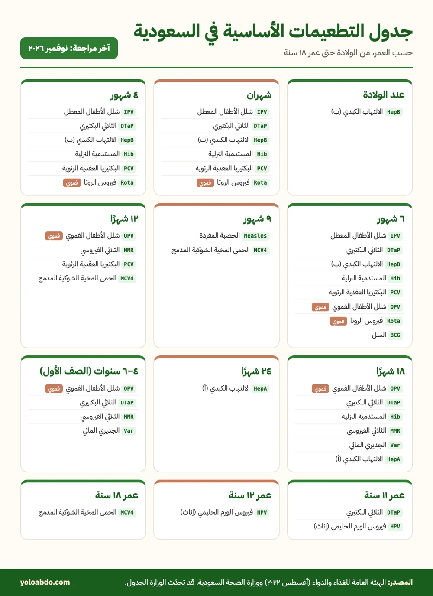
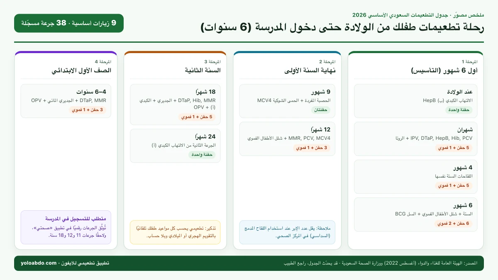
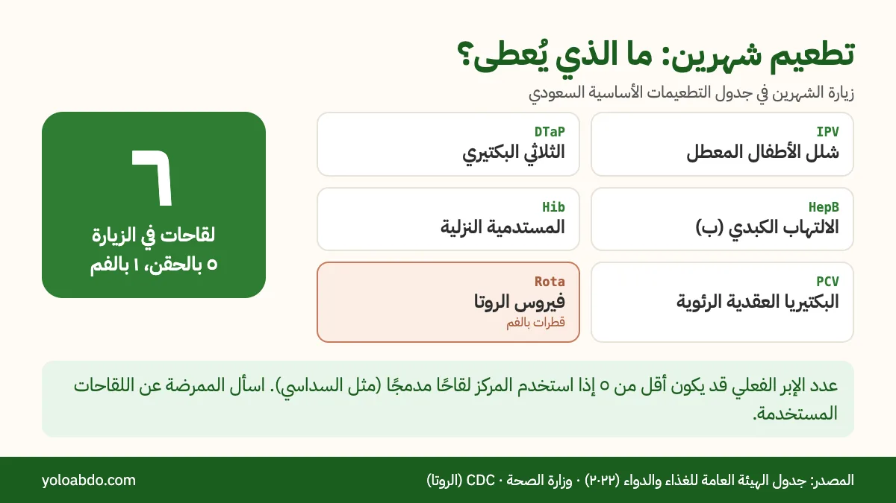
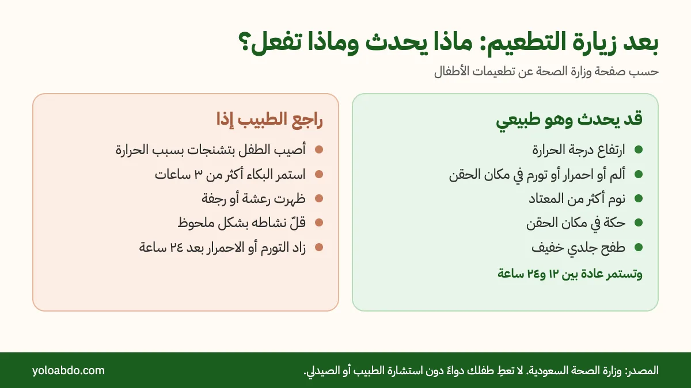
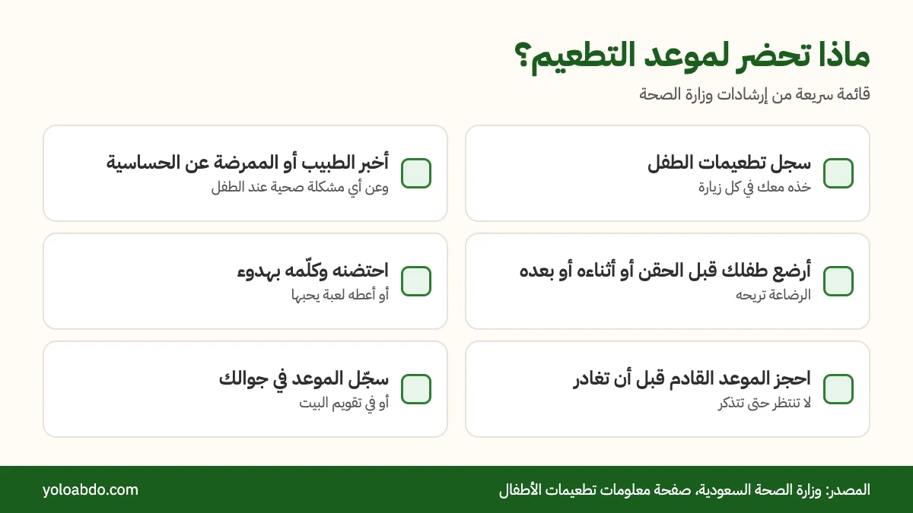
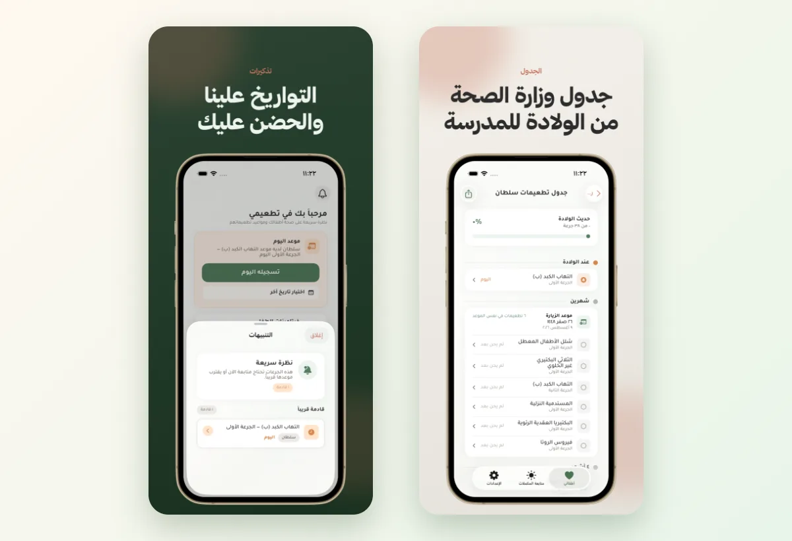

دليل · تطعيمي للآيفون
جدول التطعيمات السعودي 2026: من الولادة حتى 18 سنة
جدول التطعيمات الأساسية في السعودية حسب العمر، مع عدد لقاحات الشهرين، والحرارة بعد التطعيم، وما تفعله إذا فاتك موعد. كل معلومة هنا من مصدر رسمي مرتبط.

يبدأ جدول التطعيمات السعودي بلقاح الالتهاب الكبدي (ب) عند الولادة. بعده ست لقاحات في عمر شهرين، وست أخرى في 4 شهور، وثمانية في 6 شهور. ثم تأتي زيارات 9 و12 و18 و24 شهرًا، ثم زيارة دخول الصف الأول (4–6 سنوات). بعدها لقاحات في عمر 11 و12 و18 سنة.
آخر مراجعة: 21 نوفمبر 2026. المصدر: جدول «جدول التطعيمات الأساسية في المملكة العربية السعودية» الصادر عن الهيئة العامة للغذاء والدواء في أغسطس 2022، مقارنًا بصفحة وزارة الصحة. قد تحدّث الوزارة الجدول، فاستشر طبيب الأطفال أو مركز الرعاية الأولية قبل أي قرار. ولحساب مواعيد الجرعات تلقائيًا من تاريخ ميلاد طفلك مع تذكيرات على الآيفون، جرّب تطبيق تطعيمي لمتابعة التطعيمات (أو Tateemi baby vaccine tracker in English).
الخط الزمني السريع: من الولادة حتى 6 سنوات
تركّز 9 زيارات أساسية (38 لقاحًا مدرجًا في الجدول) على مرحلة الطفولة المبكرة حتى دخول الصف الأول الابتدائي، مقسّمة على أربع مراحل واضحة:

جدول التطعيمات السعودي 2026 (1448 هـ) حسب العمر
هذا الجدول للتطعيمات الأساسية. الأسماء من ملف الهيئة، والأحرف اللاتينية هي الرموز المستخدمة في الملف. العمود الأخير يعدّ اللقاحات المدرجة، وليس عدد الإبر.
| الزيارة | اللقاحات | العدد |
|---|---|---|
| عند الولادة | الالتهاب الكبدي (ب) HepB | 1 |
| شهران | شلل الأطفال المعطل IPV، الثلاثي البكتيري DTaP، الالتهاب الكبدي (ب)، المستدمية النزلية Hib، البكتيريا العقدية الرئوية PCV، فيروس الروتا Rota فموي | 6 |
| 4 شهور | اللقاحات الستة نفسها (مع الروتا فموي) | 6 |
| 6 شهور | IPV, DTaP, HepB, Hib, PCV، شلل الأطفال الفموي OPV فموي، Rota فموي، السل BCG | 8 |
| 9 شهور | الحصبة المفردة، الحمى المخية الشوكية المدمج MCV4 | 2 |
| 12 شهرًا | OPV فموي، الثلاثي الفيروسي MMR, PCV, MCV4 | 4 |
| 18 شهرًا | OPV فموي، DTaP, Hib, MMR، الجديري المائي، الالتهاب الكبدي (أ) HepA | 6 |
| 24 شهرًا | الالتهاب الكبدي (أ) | 1 |
| 4–6 سنوات (الصف الأول) | OPV فموي، DTaP, MMR، الجديري المائي | 4 |
| 11 سنة | DTaP، فيروس الورم الحليمي HPV (إناث) | 2 |
| 12 سنة | HPV (إناث) | 1 |
| 18 سنة | MCV4 | 1 |
تريد حساب مواعيد طفلك تلقائيًا دون أن تفوتك جرعة؟ أدخل تاريخ الميلاد في تطعيمي ليجهّز لك كل المواعيد من الولادة حتى 6 سنوات (هجري أو ميلادي) مع تذكيرات قبل كل موعد، مجانًا وبلا حساب.
هل يوجد جدول تطعيمات سعودي جديد؟
لم أجد إعلانًا رسميًا عن جدول جديد. صفحة «جدول التطعيمات الأساسية» في موقع وزارة الصحة كان آخر تعديل لها في 28 ذو الحجة 1447 هـ، وهي تربط بملف الجدول نفسه (نسخة 2019). أما المواقع التي تضع «1448» في عنوانها فتنقل غالبًا نسخًا قديمة. تحقق دائمًا من الوزارة.
لكنني وجدت فرقين بين ملفين رسميين:
- عمر 11 سنة: ملف الهيئة (2022) يكتب DTaP، وملف الوزارة (تاريخ طباعته ديسمبر 2019) يكتب Tdap.
- الإنفلونزا: ملف الوزارة فيه صف للقاح الإنفلونزا من عمر 6 شهور. ملف الهيئة لا يذكره.
ما الجديد بعد 2022؟
- الإنفلونزا الموسمية: في سبتمبر 2025 أتاحت وزارة الصحة حجز لقاح الإنفلونزا الموسمية عبر تطبيق صحتي، وذكرت الأطفال من 6 شهور إلى 5 سنوات ضمن الفئات الأكثر عرضة للمضاعفات (خبر الوزارة).
- الفيروس المخلوي التنفسي (RSV): يذكر تقرير صحفي (أغسطس 2026) أن حماية حديثي الولادة من RSV أُضيفت في 2025، وأن تطعيم الحوامل يُضاف في 2026. لم أجد ذلك بعد في صفحات وزارة الصحة: صفحة الوزارة عن لقاح RSV (آخر تحديث يوليو 2024) توصي به لمن تجاوز 60 عامًا. اسأل المستشفى عند الولادة أو مركز الرعاية الأولية إن كان طفلك يستحق الحماية من RSV.
في ملف الهيئة أيضًا نجمة بجانب لقاح المكورات الرئوية في زيارة 6 شهور، ولا يوجد تحتها شرح. سأعتمد جدول الهيئة وأنبه عند كل فرق. وهذا ملف الوزارة PDF للمقارنة.
تطعيم شهرين: كم إبرة؟
في زيارة الشهرين ست لقاحات. خمسة منها تُعطى بالحقن، والسادس لقاح الروتا. وتقول مراكز مكافحة الأمراض الأمريكية (CDC) إن لقاح الروتا يُعطى بالفم على شكل قطرات.

عدد الإبر الفعلي يتغير حسب المنتج. تقول وزارة الصحة في أسئلتها الشائعة إن اللقاحات المدمجة تقلل عدد الحقن، وتذكر اللقاح السداسي مثالًا. هذا اللقاح يجمع الدفتيريا والكزاز والسعال الديكي وشلل الأطفال المعطل والمستدمية النزلية والالتهاب الكبدي (ب). فإذا استخدم مركزك السداسي، تدخل أربعة لقاحات من الخمسة في حقنة واحدة، فيكون المجموع حقنتين تقريبًا. هذا حسابي، وليس نصًا من الوزارة، فالجدول لا يحدد المنتج. اسأل الممرضة.
وتؤكد الوزارة أن إعطاء عدة لقاحات في زيارة واحدة لا يضر الطفل.
تطعيمات الأطفال 6 شهور
زيارة 6 شهور هي الأكبر في الجدول: ثمانية لقاحات. وهي IPV وDTaP والالتهاب الكبدي (ب) وHib وPCV وشلل الأطفال الفموي وفيروس الروتا والسل. اثنان منها بالفم: شلل الأطفال الفموي والروتا. وفي هذه الزيارة يُعطى لقاح السل (BCG) حسب الجدول.
تطعيم شهرين والحرارة: ما الطبيعي؟
ارتفاع الحرارة بعد التطعيم شائع. تذكر وزارة الصحة أن معظم الأطفال يكونون بخير، وأن بعضهم تظهر عليه آثار خفيفة مؤقتة، وأن هذه الردود طبيعية وتستمر عادةً بين 12 و24 ساعة.

لا أعطي هنا جرعات دواء. اسأل الطبيب أو الصيدلي عن أي دواء للحرارة، فالجرعة تعتمد على وزن الطفل وعمره. إذا بدا الطفل مريضًا بشدة، أو لم تطمئن، اتصل بالطبيب مباشرة.
وتشير الوزارة إلى حالات يمكن فيها تأجيل اللقاح: ارتفاع الحرارة، أو مرض حاد. لكن الطفل يمكنه أخذ اللقاح مع مرض بسيط أو حمى خفيفة. إذا كان طفلك محمومًا يوم الموعد، اسأل الطبيب قبل أن تقرر.
ماذا لو فاتني موعد التطعيم؟
تقول الوزارة إن الفائدة القصوى تكون عند أخذ اللقاح في موعده، وإن التأخير يعرّض الطفل للأمراض المستهدفة. لكن الحل بسيط:
- لا تبدأ الجدول من الأول.
- راجع عيادة التحصين في المركز الصحي في أقرب وقت.
- يكمل الطبيب أو الممرضة الجرعات من آخر جرعة أخذها الطفل.
- لا تقدّم الجرعة قبل موعدها. تقول الوزارة إن الفواصل المحددة تعطي المناعة وقتًا لتكوّن الأجسام المضادة.
تطعيمات الأطفال في صحتي
صحتي هو التطبيق الرسمي لوزارة الصحة. تذكر صفحة المنصة أنها تخدم المواطنين والمقيمين مع تابعيهم، وأن فيها «سجل تطعيمات الأطفال» و«مواعيد طفلك» و«حجز لتلقي التطعيمات». وهي بالعربية والإنجليزية.
وأعلنت الوزارة في خبر بتاريخ 25 يوليو 2024 إيقاف إصدار الشهادات الورقية لتطعيمات الأطفال، وتحويلها إلى سجلات رقمية. يمكنك توثيق تطعيمات طفلك بحجز موعد في عيادة توثيق التطعيمات، أو عبر صحتي. وربطت الوزارة اكتمال التطعيمات بفحص اللياقة قبل المدرسة، فوثّق السجل مبكرًا.
وللمدرسة سبب آخر: تقول الوزارة إن التطعيمات من متطلبات التسجيل في المدرسة أو الحضانة.

البطاقة الورقية وصحتي وتطعيمي: ماذا يناسبك؟
هذه ثلاثة أدوات لوظائف مختلفة. صحتي هو السجل الرسمي. تطعيمي ليس سجلًا رسميًا، فهو تذكير خاص.
| الميزة | البطاقة الورقية | صحتي | تطعيمي |
|---|---|---|---|
| سجل رسمي | أوقفت الوزارة إصدار الجديد (خبر 2024)، ويمكن توثيق الموجود رقميًا | نعم | لا، سجل خاص تدخله بنفسك |
| حجز موعد | لا | نعم | لا |
| تذكيرات على الجوال | لا | لم أتحقق من تفاصيلها | نعم: قبل الموعد، وفي يومه، وعند التأخر |
| أكثر من طفل | بطاقة لكل طفل | نعم (التابعون) | الطفل الأول مجاني، والبقية في النسخة Pro |
| جداول دول أخرى | لا | جدول السعودية | 7 دول: السعودية والإمارات والكويت وقطر والبحرين وعُمان وهولندا |
الخلاصة: صحتي لحجز الموعد والسجل الرسمي. وتطعيمي إضافة إن أردت تذكيرًا وجدولًا واضحًا في جيبك.
تطعيمي: تذكير خاص على جوالك
أنا مطور تطعيمي، وهو تطبيق عربي للآيفون. تدخل تاريخ ميلاد الطفل وتختار الدولة، فيحسب التطبيق على الجهاز كل موعد وكل جرعة متأخرة. جدول السعودية فيه يطابق جدول الهيئة (أغسطس 2022) من الولادة حتى 4–6 سنوات: 38 جرعة.

- يعمل بلا حساب: الجدول والمواعيد تُحسب على جهازك، وسجلات الأطفال تبقى على الهاتف.
- تذكيرات: قبل الموعد، وفي يومه، وعند التأخر.
- طفل أكبر: يعرض لك قائمة الجرعات السابقة لتحددها بسرعة.
- تقويم هجري أو ميلادي: حسب اختيارك.
- مجاني للطفل الأول: إضافة طفل ثانٍ تحتاج اشتراك Pro الاختياري.
حدود التطبيق: لا يحجز مواعيد، ولا يغني عن السجل الرسمي في صحتي. وجدوله ينتهي عند 6 سنوات، فلا يشمل لقاحات 11 و12 و18 سنة المذكورة أعلاه.
أسئلة شائعة
هل يوجد تطعيم للفيروس المخلوي التنفسي (RSV) للمواليد في السعودية؟ تذكر تقارير صحفية أن حماية حديثي الولادة من RSV أُضيفت في 2025، لكن صفحات وزارة الصحة لم توضح ذلك بعد. اسأل المستشفى عند الولادة أو مركز الرعاية الأولية.
كم إبرة في تطعيم الشهرين؟ في الزيارة 6 لقاحات: خمسة بالحقن وواحد بالفم (الروتا). عدد الإبر الفعلي يقل إذا استخدم المركز لقاحًا مدمجًا مثل السداسي. اسأل الممرضة عن اللقاحات المستخدمة.
كم عدد زيارات وتطعيمات الطفل في السنة الأولى في السعودية؟ في السنة الأولى (من الولادة حتى 12 شهرًا) توجد 6 زيارات: عند الولادة، وعمر شهرين، و4 شهور، و6 شهور، و9 شهور، و12 شهرًا، وتضم 27 لقاحًا مدرجًا في الجدول (بينها قطرات فموية للروتا وشلل الأطفال الفموي، ويقل عدد الحقن عند استخدام اللقاحات المدمجة).
هل يُحسب جدول التطعيمات السعودي بالهجري أم بالميلادي؟ تُحسب أعمار الجرعات في مراكز الرعاية الأولية بالأشهر الميلادية من تاريخ ميلاد الطفل. وفي تطبيق تطعيمي يمكنك عرض التواريخ بالتقويم الهجري أو الميلادي حسب اختيارك.
هل الحرارة بعد التطعيم طبيعية؟ نعم. تذكر وزارة الصحة ارتفاع الحرارة ضمن الآثار الشائعة، وتستمر عادة بين 12 و24 ساعة. راجع الطبيب إذا حدثت تشنجات، أو بكاء أكثر من 3 ساعات، أو رعشة، أو قل نشاط الطفل بوضوح، أو زاد التورم والاحمرار بعد 24 ساعة.
ماذا أفعل إذا فاتني موعد التطعيم؟ راجع عيادة التحصين في المركز الصحي في أقرب وقت. حسب وزارة الصحة، تكمل الجرعات من آخر جرعة أخذها الطفل ولا تبدأ من الأول.
أين أجد جدول التطعيمات الرسمي؟ في صفحة «جدول التطعيمات الأساسية» على موقع وزارة الصحة، وفي ملف الهيئة العامة للغذاء والدواء (أغسطس 2022). الروابط في آخر المقال.
هل يوجد تطبيق لتذكيري بمواعيد التطعيم؟ نعم. صحتي فيه سجل تطعيمات الأطفال ومواعيد الطفل. وتطعيمي تطبيق خاص يحسب المواعيد ويرسل تذكيرات من جوالك، لكنه لا يغني عن السجل الرسمي.
هل التطعيمات الأساسية مطلوبة للمدرسة؟ نعم. تذكر وزارة الصحة أنها من متطلبات التسجيل في المدرسة، وأن الجدول يمتد من الولادة حتى دخول الصف الأول.
المصادر
- وزارة الصحة: لقاح الإنفلونزا الموسمية عبر صحتي (سبتمبر 2025) · وزارة الصحة: لقاح RSV · 25H: 18 مرضًا في جدول التحصينات الوطني (أغسطس 2026)
- الهيئة العامة للغذاء والدواء: جدول التطعيمات الأساسية في المملكة العربية السعودية (أغسطس 2022)
- الهيئة: صفحة المقال التوعوي
- وزارة الصحة: جدول التطعيمات الأساسية · ملف PDF
- وزارة الصحة: معلومات تطعيمات الأطفال · أسئلة شائعة في التحصينات
- وزارة الصحة: منصة صحتي · خبر توثيق الشهادات الورقية (2024)
- CDC: لقاح الروتا · تطعيمي على App Store
هذا المقال معلومات عامة، وليس نصيحة طبية. استشر طبيب الأطفال أو مركز الرعاية الأولية. قد تحدّث الوزارة الجدول في أي وقت.